🔐 The Imitation Game · Tutorial
튜링 테스트를 팀 대결로 체험하는 수업 도구입니다. 교사는 입장 코드 하나로 수업을 열고, 참가자는 링크 하나로 들어옵니다. 아래는 실제 화면을 따라가며 보는 안내입니다.
Teacher
노트북 브라우저에서 /turing-test/teacher로 들어갑니다. 설치할 것도, API 키를 준비할 것도 없습니다.
연수나 학교에서 안내받은 입장 코드를 넣고 입장을 누릅니다. AI 호출은 서버에 등록된 공용 키를 쓰므로 따로 준비할 것이 없습니다.
입장은 12시간 동안 유지됩니다. 서버가 재시작되면 다시 넣으라는 안내가 뜨는데, 세션과 점수는 그대로입니다.
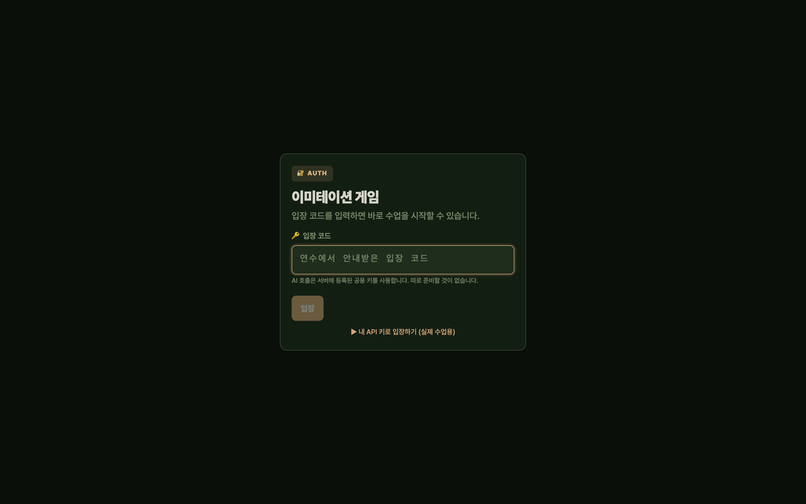
ai-leader처럼 부르기 쉬운 코드가 자동으로 제안됩니다. 마음에 드는 말로 바꿔도 되고, 대소문자는 구분하지 않습니다. "다른 코드 뽑기"를 누르면 새 코드가 나옵니다.
다른 선생님이 진행 중인 코드는 쓸 수 없다고 알려 줍니다. 같은 코드로 다시 열면 내 세션을 이어서 사용합니다.
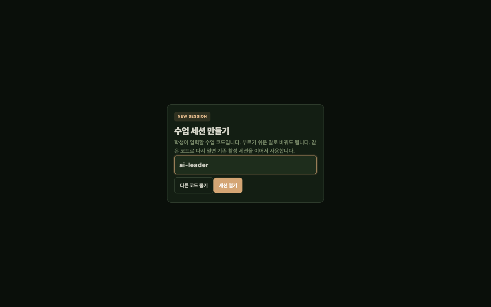
왼쪽 SESSION 칸의 링크에는 수업 코드가 들어 있어, 클릭 한 번으로 팀 만들기 화면까지 갑니다. 위쪽 "참가 링크 복사" 버튼으로 복사해 줌 채팅·카카오톡·구글 문서에 붙여 넣으세요.
링크 대신 기본 주소를 띄우고 수업 코드를 불러 줘도 됩니다.
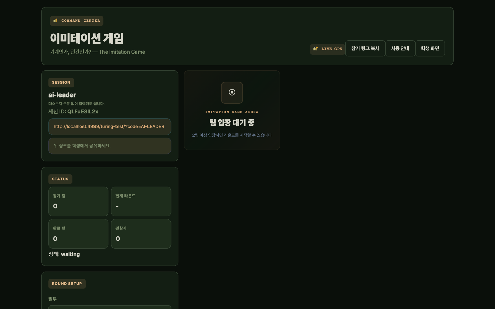
참가자가 팀을 만들면 STATUS와 가운데 PARTICIPANTS 영역에 실시간으로 나타납니다. 팀이 2개 이상이어야 "라운드 시작" 버튼이 켜집니다.
팀 수가 홀수면 한 팀은 관찰자가 되어 다른 팀의 대화를 보며 투표합니다.
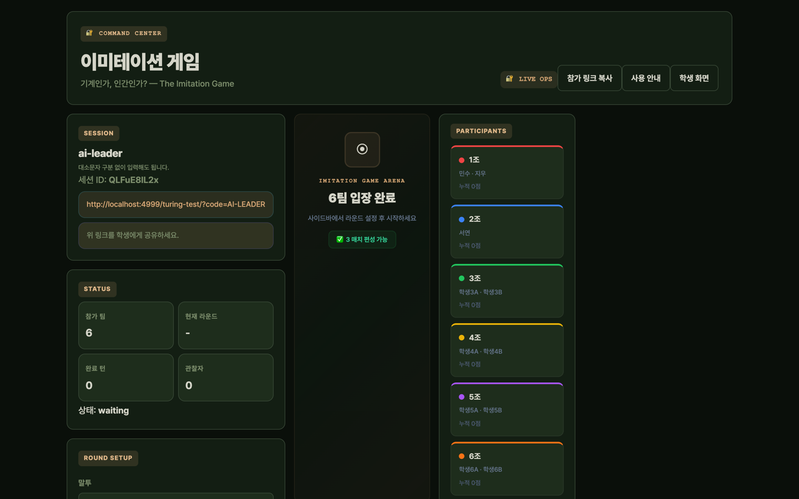
왼쪽 ROUND SETUP에서 말투, AI 모델, 턴 수, 안내문 읽기 시간, 대화 시간, 응답 지연, 투표 시간, 정답 점수를 고르고 "라운드 시작"을 누릅니다.
| 항목 | 연수·첫 라운드 권장 | 설명 |
|---|---|---|
| 말투 | 자연스러운대화 | 사람·AI 답변을 모두 같은 말투로 바꿔 전달합니다 |
| AI 모델 | Claude | 라운드마다 바꾸면 AI별 차이를 체감합니다 |
| 턴 수 · 대화 시간 | 6턴 · 5분 | 한 턴은 응답 지연 + 입력 시간이 걸립니다 |
| 응답 지연 | 20초 | 사람과 AI의 답이 같은 시간에 도착해 속도로는 구별할 수 없습니다 |
| 투표 시간 · 점수 | 1분 · 1점 | 후반 라운드에서 점수를 올리면 역전이 생깁니다 |
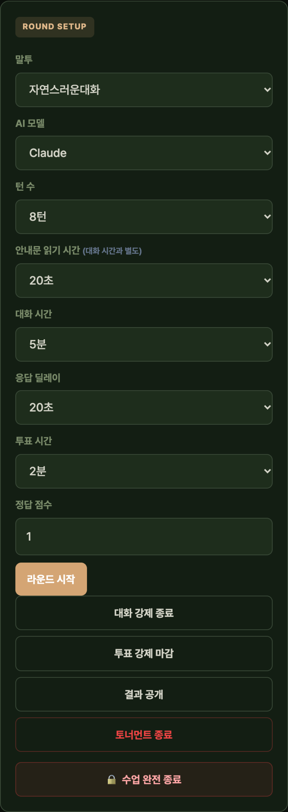
위에 타이머와 라운드 정보가 뜨고, 아래 MATCHES에 질문 팀과 답변 팀이 짝지어진 카드가 나옵니다. 팀 이름은 참가자가 프로젝터로 매칭을 알 수 없게 가려져 있습니다.
매치 카드를 누르면 그 팀의 대화가 실시간으로 보입니다. 모든 팀이 턴을 마치면 자동으로 투표 단계로 넘어가고, 시간이 모자라면 "대화 강제 종료"로 넘길 수 있습니다.
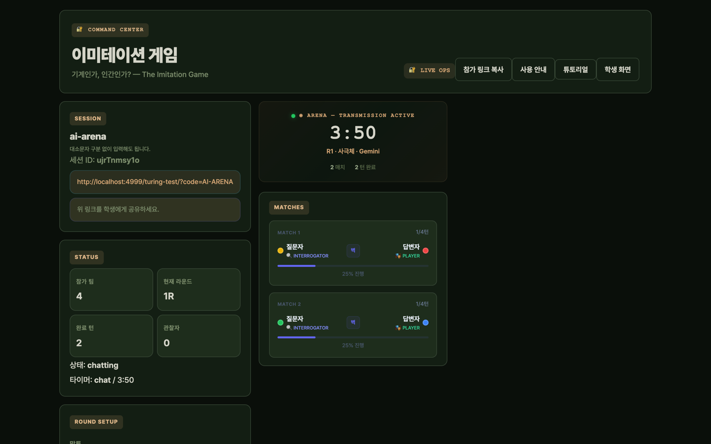
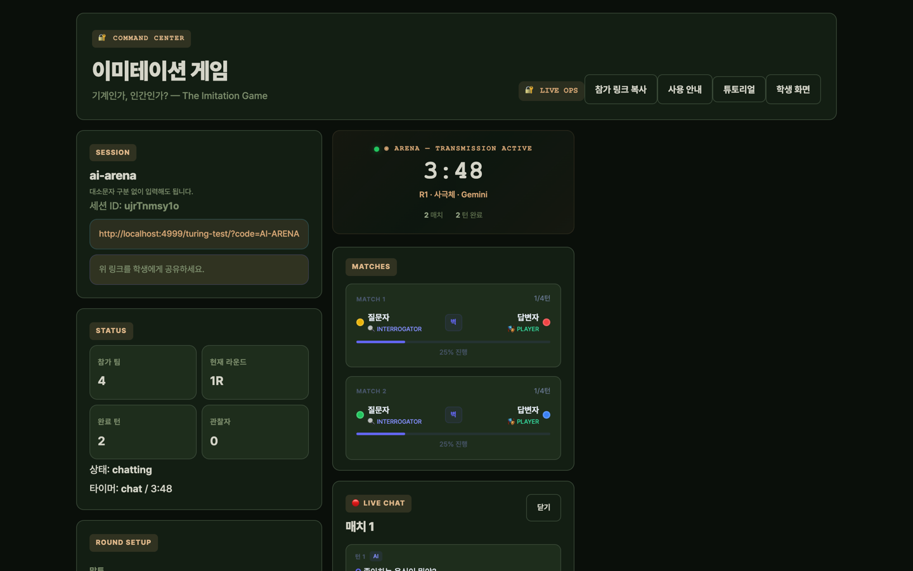
투표 단계에서는 질문 팀이 턴마다 "사람인가, AI인가"를 고릅니다. 모두 제출했거나 시간이 지나면 "투표 강제 마감" 뒤 "결과 공개"를 누릅니다.
결과 화면에는 팀 순위와 함께 튜링의 30% 기준 카드가 나옵니다. AI가 사람으로 판정된 비율이 30%를 넘으면 "기계가 모방 게임을 통과했습니다"라고 표시됩니다. 토론의 출발점으로 쓰세요.
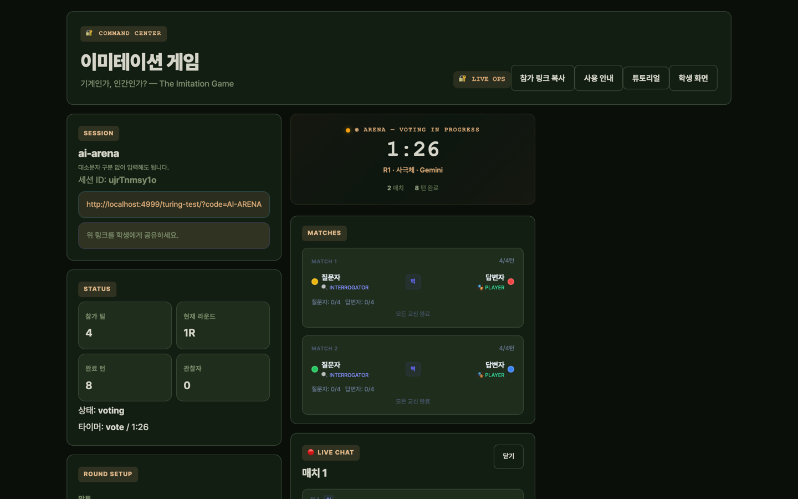
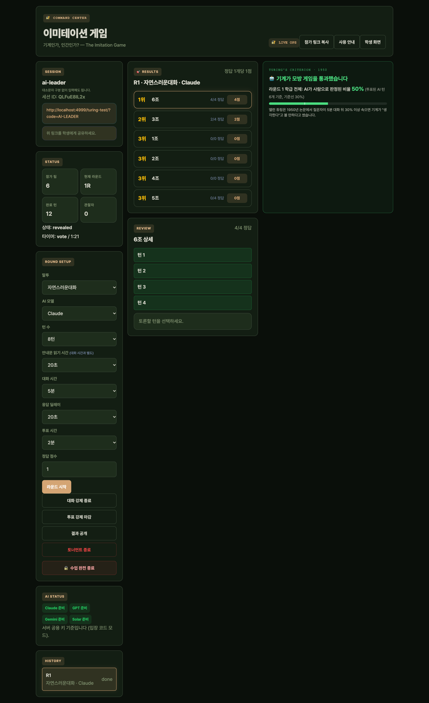
결과 공개 뒤 "라운드 시작"을 누르면 역할이 바뀐 채 다음 라운드가 시작됩니다. 말투와 AI 모델을 바꿔 보세요.
마지막 라운드가 끝나면 "토너먼트 종료"로 최종 순위와 전체 통계를 보여 주고, CSV로 내려받거나 바로 새 수업을 시작할 수 있습니다.
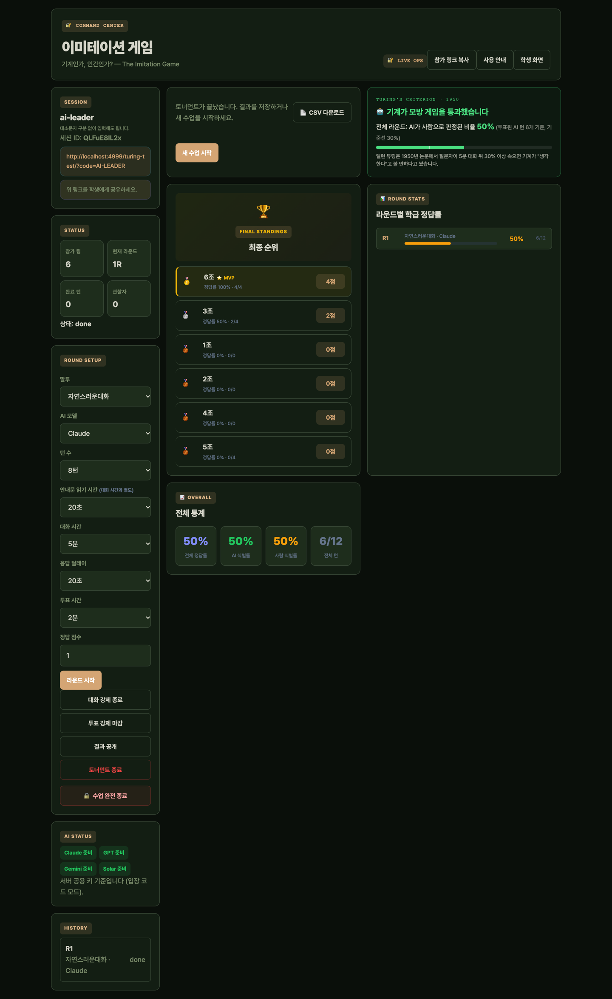
점수 집계 없이 수업을 끝내려면 "수업 완전 종료"를 누릅니다. 참가자 화면도 함께 종료되고, 종료 화면에 진행한 라운드의 분석 결과(정답률, AI 식별률, 라운드별 비교, 팀 순위, 튜링 기준)가 바로 나옵니다.
여기서도 CSV를 내려받을 수 있고, "새 수업 시작"으로 같은 코드의 새 세션을 열 수 있습니다.
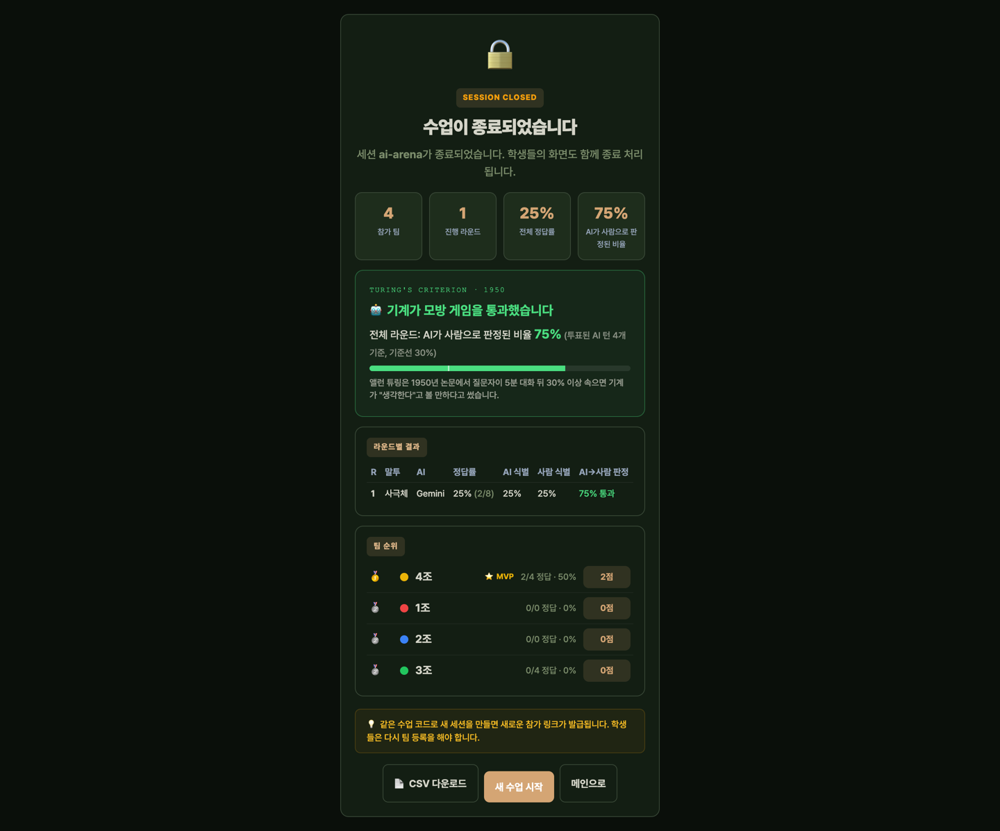
Student · Participant
스마트폰이나 노트북 어느 쪽이든 됩니다. 2~3명이 한 팀이고, 한 기기로 함께 보면 됩니다.
벽 너머 상대에게 질문을 보내고, 답변을 보고 사람인지 AI인지 판단합니다. 투표는 질문자만 합니다.
질문에 자연스럽게 답합니다. 들키면 상대 팀 점수. 어떤 턴은 AI가 대신 답하므로 그때는 타이핑하는 척만 합니다.
팀 수가 홀수일 때 한 팀. 다른 팀의 대화를 보면서 같은 질문에 투표합니다.
라운드마다 역할이 바뀝니다. 이번에 질문자였으면 다음에는 답변자입니다.
선생님이 준 링크를 열면 수업 코드가 이미 들어 있습니다. 기본 주소로 들어왔다면 수업 코드를 입력하고 "코드 확인"을 누릅니다. 대소문자는 상관없습니다.
팀 이름과 팀원 이름을 넣고 "팀 만들고 입장!"을 누르면 대기 화면이 나옵니다. 먼저 만들어진 팀에 합류할 수도 있습니다.
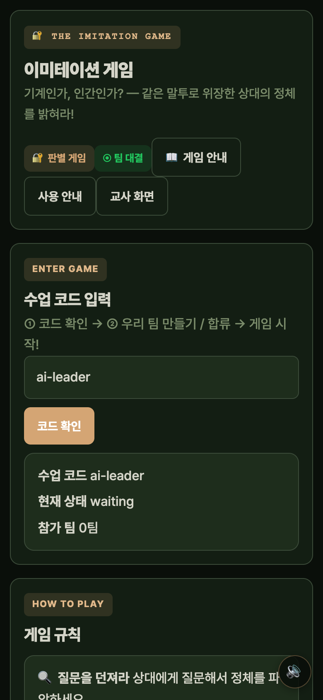
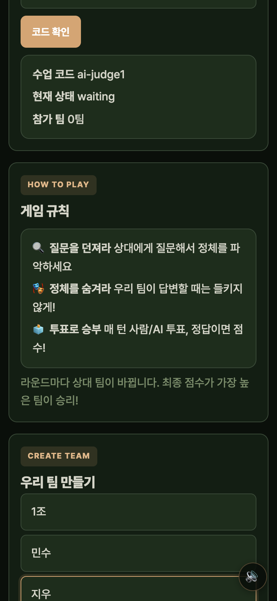
라운드가 시작되면 이번 역할이 기밀 문서처럼 나옵니다. 질문자인지 답변자인지, 이번 라운드 말투가 무엇인지 확인하세요. 안내문 읽기 시간이 끝나면 자동으로 대화가 시작됩니다.
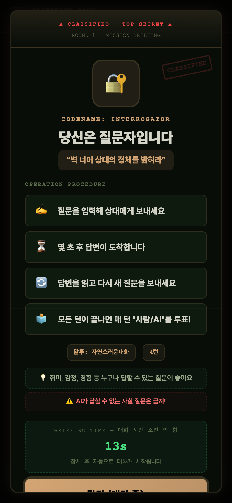
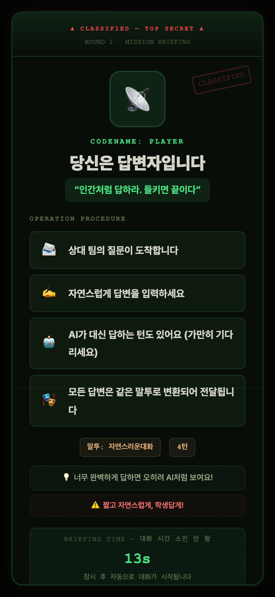
아래 입력창에 질문을 쓰고 보냅니다. 답은 정해진 지연 시간 뒤에 도착하므로, 사람이든 AI든 같은 시간에 옵니다. 답을 읽고 다음 질문을 보내는 것을 턴 수만큼 반복합니다.
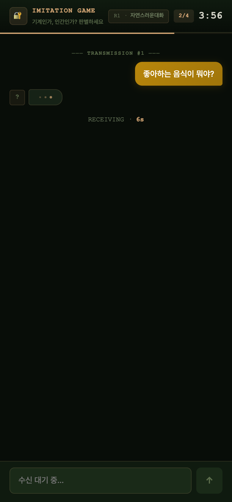
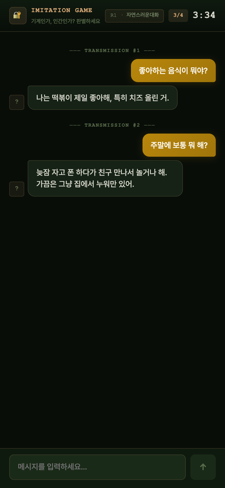
사람 턴에는 질문이 도착하면 직접 답을 씁니다. 답은 이번 라운드 말투로 바뀌어 전달되므로 말투로는 들키지 않습니다.
AI 턴에는 AI가 대신 답하고, 화면에는 AI 답변 미리보기와 "타이핑하는 척하세요" 칸이 나옵니다. 실제로 보내지지는 않지만 옆 팀에게 자연스럽게 보이도록 타이핑하는 척합니다.
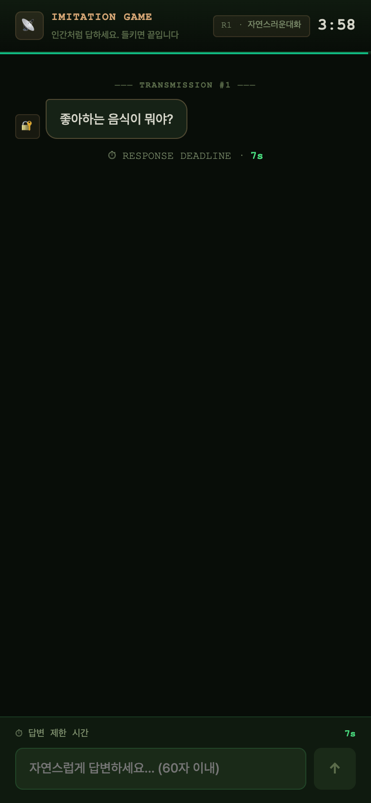
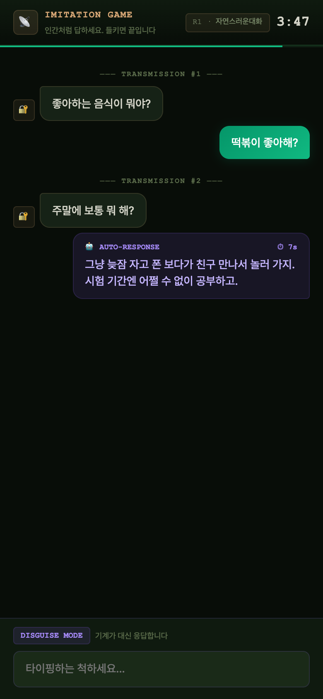
대화가 끝나면 질문자 화면에 턴별 대화가 다시 나옵니다. 턴마다 "사람" 또는 "AI"를 고르고 "최종 제출"을 누릅니다. 제출한 뒤에는 바꿀 수 없고, 투표하지 않은 턴은 0점입니다.
답변자였던 팀은 투표할 대화가 없어 "질문 팀이 투표 중입니다" 안내가 나옵니다.
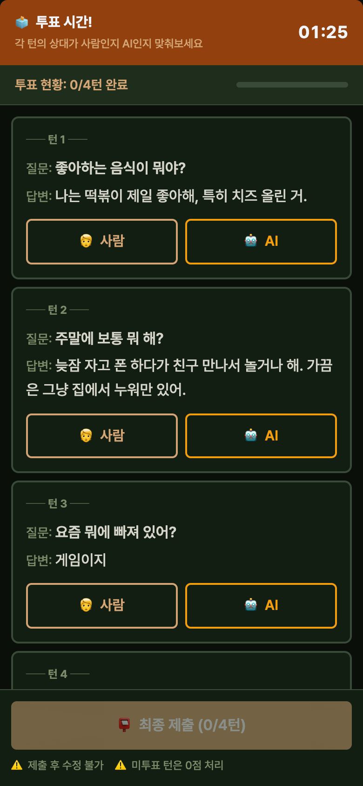
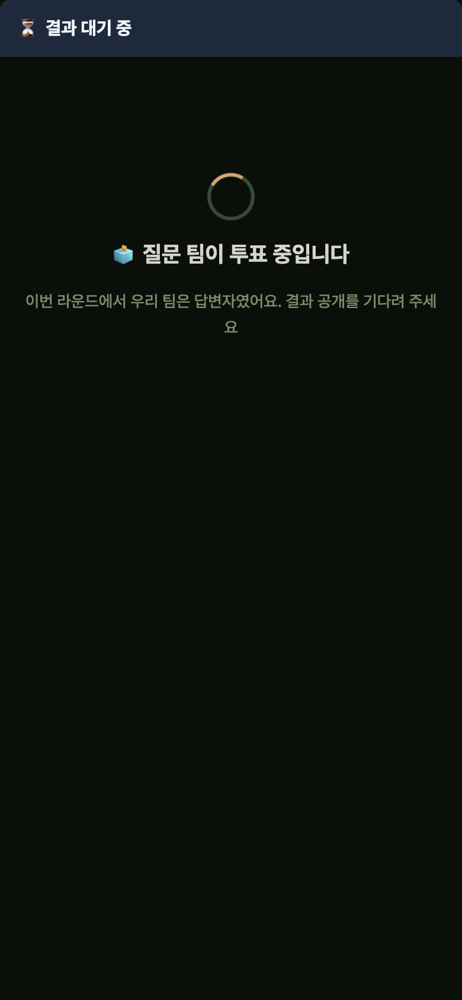
선생님이 결과를 공개하면 턴마다 실제로 사람이었는지 AI였는지, 맞혔는지가 나오고 누적 순위가 보입니다. 학급 전체의 "AI가 사람으로 판정된 비율"이 튜링의 30% 기준과 함께 나옵니다.
토너먼트가 끝나면 최종 순위와 MVP가 표시됩니다.
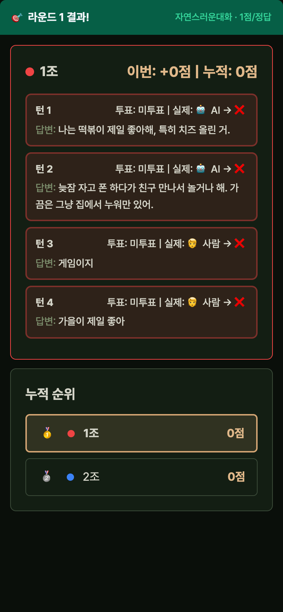
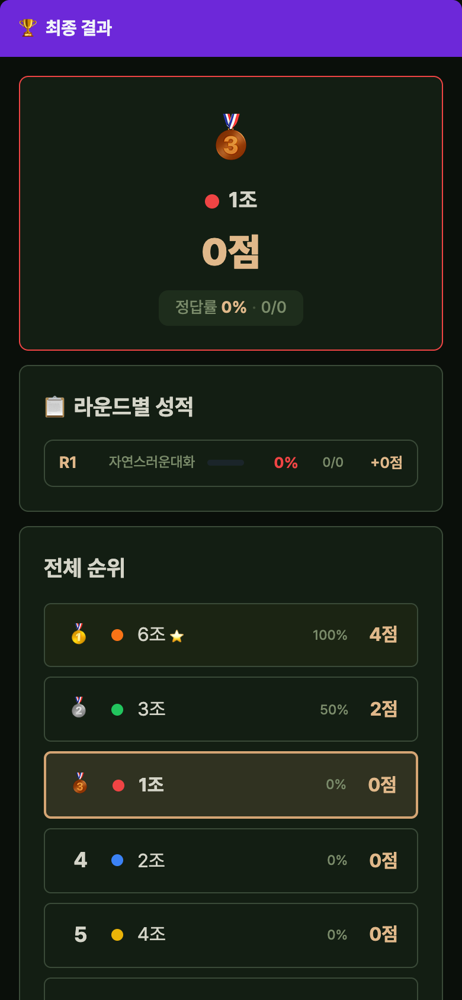
Workshop
진행자가 세션을 하나 열고, 교사들은 2명씩 5팀으로 참가합니다. 라운드 1만 하면 20분, 라운드 2까지 하면 30분입니다.
| 시간 | 활동 | 설정 · 비고 |
|---|---|---|
| 0~4분 | 접속 + 팀 등록 | 참가 링크를 채팅방에 붙여 넣기. 2명이 한 팀, 팀 이름만 입력 |
| 4~6분 | 규칙 한 줄 설명 | "상대가 사람인지 AI인지 맞히면 점수". 나머지는 미션 브리핑(20초)이 설명 |
| 6~14분 | 라운드 1 | 자연스러운대화 · Claude · 6턴 · 대화 5분 · 응답 지연 20초 · 투표 1분 · 브리핑 20초 |
| 14~17분 | 결과 공개 + 튜링 30% 기준 | "AI가 사람으로 판정된 비율"이 30%를 넘었는지 함께 확인 |
| 17~25분 | 라운드 2 (선택) | 사극체 · Gemini 또는 Solar · 같은 설정. 말투가 바뀌면 판별이 얼마나 어려워지는지 체감 |
| 25~30분 | 토너먼트 종료 + 교사 화면 둘러보기 | 각자 입장 코드로 교사 화면에 들어가 세션 만들기까지 (라운드는 안 돌려도 됨) |
응답 지연 20초면 한 턴이 30초 안팎이라 6턴에 3~4분이 걸립니다. 시간이 빠듯하면 턴 수를 6으로 두고 대화 시간을 3분으로 줄이세요.
FAQ
팀이 2개 이상 등록되어야 켜집니다. 진행 중인 라운드가 있으면 결과 공개 뒤에 다음 라운드를 시작할 수 있습니다.
입장은 12시간 동안 유지되고, 서버가 재시작되면 풀립니다. 새로고침해 입장 코드를 다시 넣으면 세션과 점수는 그대로입니다.
같은 코드를 다른 교사가 쓰고 있습니다. "다른 코드 뽑기"를 누르거나 다른 말로 바꾸세요.
AI 호출이 실패하면 참가자에게는 회피 문구가 나가고, 교사 화면 STATUS 아래에 빨간 경고가 뜹니다. 반복되면 AI 모델을 바꾸거나 응답 지연을 30초로 늘리세요.
정상입니다. 이번 라운드에서 답변 역할이었던 팀은 투표할 대화가 없습니다. 다음 라운드에서 역할이 바뀝니다.
같은 팀으로 다시 들어가지만 진행 중이던 대화 내역은 비어서 보일 수 있습니다. 라운드 중에는 새로고침하지 않는 것이 좋습니다.
브라우저 정책상 한 번 클릭한 뒤부터 소리가 납니다. 오른쪽 아래 🔊 버튼이 🔇이면 눌러서 켜세요.
토너먼트 종료 화면과 수업 완전 종료 화면에서 CSV 다운로드를 누르면 팀·라운드별 정답과 점수가 내려받아집니다.